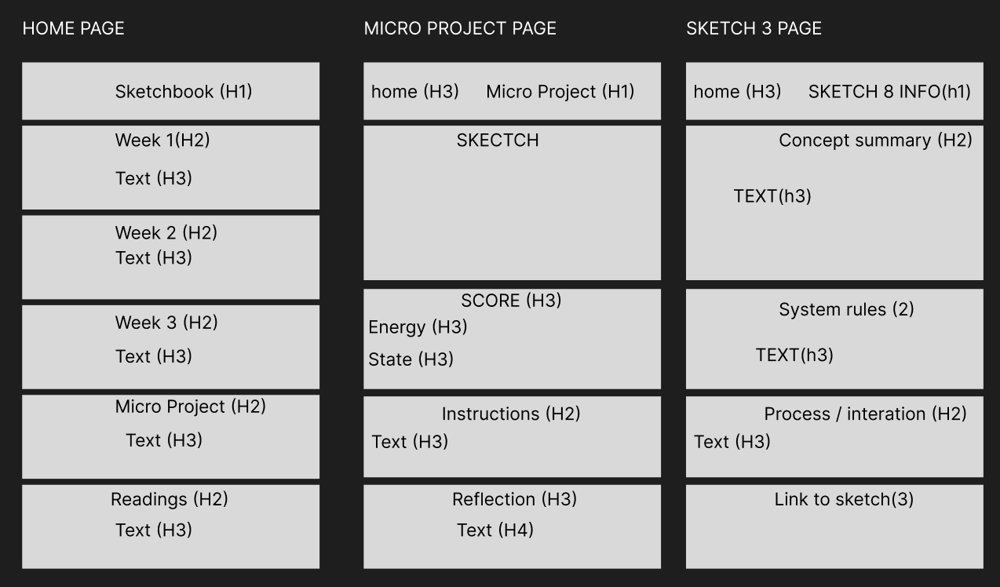

I expanded my interface from a single page ito 3 small systems of inconected pages. Focused on the mobile structures, I designed three primary page types. The micro project page, home and an info page for my micro project. THe main structural decision was to seperate interaction form explanation. In the last version, all content existed on the singal page which made it difficult to balance gameplay, instructions and reflection. With this new information page, it makes it possible for non overwhelming access to information.
I also made a more clear navigation model. The back button and simplified navigation makes iit so that the user can move bewtween pages without confusion. This addresses issues I talked about in my interface audit, particularily around the unclear navigation and lack of structure. The home page now acts as a central hub that organizzes all the sketches by week and providing clear navigation.
Another change is the strengthened hierarchy. I introduced H1-H4 across all the pages so that now directions are easier to distinguish. This improves clarity and reduces the need for users to guess how the system works.
By making score, energy, and state always visible, with the explicit instructions, the interface is now better communicaated.
WHat I feel is still unresolved is how to communicate the more complex system behaviors, such as the difficutly scaling and energy mechanics. I dont want to overwhelm the interface, thats why. The structure and navigation is now more clear, there is still a gap between the system and the understanding. Now all I need to do is make the internal dynamics more legible while keeping the layout simple.